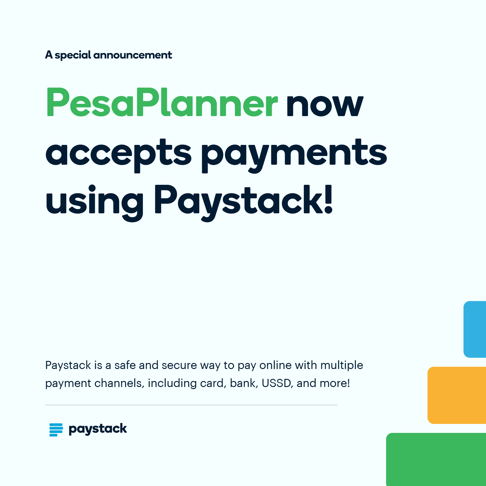

Your money has gone on a tour
M-Pesa, cash, bank, till sales, side gig. The evidence is everywhere; now you’re doing unpaid detective work across messages, receipts and “I’ll remember.”
Case file: your own money.Biashara was busy. So where did the money go? Salary imeingia; rent has claimed first dibs. You rode since dawn; fuel and repairs took their cut. And “kesho nitakulipa” has entered another financial year. Your money has plans. Let’s see them.
Salary imeingia; rent has dibs. The shop needs stock. Tokens have gone. Fare is negotiating with lunch. The month is halfway through and your money has somehow attended more meetings than you have.
The boda was on the road since dawn, but fuel and repairs got paid first. The teacher’s salary landed and fees were waiting at the door. The family bought shopping, then forgot what was actually in the cupboard. Different lives, same plot twist: the money went somewhere. The question is where—and what’s already waiting for the rest.
M-Pesa, cash, bank, till sales, side gig. The evidence is everywhere; now you’re doing unpaid detective work across messages, receipts and “I’ll remember.”
Case file: your own money.The app says KSh 5,000. Rent, fuel, stock, fees and home have each quietly reserved a piece. Your balance forgot to mention the guest list.
See what’s actually free.Casual work, commission, biashara and freelance pay don’t always arrive on the same polite date every month. The bills, somehow, remain punctual.
Plan for the money you get.Fare, airtime, snacks and quick top-ups look innocent one at a time. Together, they’ve held several meetings and used the week’s budget as the venue.
Small spends have receipts too.Today’s till money pays for tomorrow’s stock, then school needs appear. Suddenly even you aren’t sure whether the biashara made money or just moved it around.
Untangle biashara and home.A customer will pay later. A friend owes you. You borrowed for stock. Write it down, because memory is not a debt collection department—and records can’t guarantee repayment.
Give “kesho” a paper trail.Fees, uniforms, repairs, rent, stock and family events are warming up in the wings. A heads-up gives you a chance to plan before the dramatic entrance.
Future you deserves a warning.A teacher, mama mboga, boda rider, household, student and duka owner have different money realities. A one-size budget has clearly never waited for matatu change.
Start with your kind of life.Which receipt was that? Who sent the money? Was it Tuesday or “around Tuesday”? You have better things to do than investigate your own lunch.
Less guesswork. More actual life.Ever looked at your balance and thought, “Hii pesa ilienda wapi?” PesaPlanner is an offline-first money-management app for Kenyan life. Bring transactions, bills, budgets and goals into one view—whether money comes from a salary, customers, a route, a classroom or home.
See what came in, what already has dibs, and what might be left. Your records stay on your device, so even when the network goes to take a break, the detective work can continue.
Scan supported M-Pesa messages or import a statement. Check every suggested transaction before saving it; the app won’t pretend every mystery till is your best friend.
Categorise spending and compare periods. The snacks are innocent individually. The weekly total may request legal representation.
Track bills, recurring costs and debts so rent, school fees and “nitakulipa kesho” are visible before you spend the same shilling twice.
Safe-to-spend guidance considers the balances, commitments and spending pace you recorded. It’s an estimate, not a bank balance or permission slip.
PesaPlanner is not a bank, lender or M-Pesa replacement. It’s for the Kenyan money plot: salary day, M-Pesa messages, biashara stock, matatu fare, rent, fees, HELB, household bills, uneven income and the debt that was meant to be paid “kesho.” Your records and choices stay yours.
“Nitajipanga” is a lovely speech. Let’s give it supporting evidence.
Start with the full walkthrough. Open the video shelf below if you want to see the short clips.
The launch ad. Every semester, money disappears — PesaPlanner knows where.
0:30Ask your money anything — even whether the weekend plans are actually affordable.
0:15What a "cheap" lunch really costs when you eat it five times a week.
0:15"Bro, nitakurudishia kesho." The debt tracker exists because kesho is not a database.
0:15Cook, buy, or check what's already in the cupboard. Meal planning meets kitchen stock.
0:15The day upkeep lands and you feel like a shareholder. PesaPlanner makes it last the semester.
0:15Every comrade has different economics. PesaPlanner fits your life, not a template.
0:15PesaBuddy speaks English, Kiswahili, and Sheng — including the mix.
0:15These are the tools for finding the till, spotting the bills, planning around uneven income and answering the monthly classic: “Pesa imeenda wapi?” For work, home, campus and biashara across Kenya.
Your M-Pesa messages already contain a lot of information about your financial life. PesaPlanner helps turn supported transaction messages into a structured financial record. Instead of entering every transaction manually, the app processes recognised messages and organises the information into useful records.
Scan supported M-Pesa and Airtel messages, or import an M-Pesa CSV or readable password-protected PDF statement. Imported rows wait in a review queue alongside scanned messages. Check categories and details before saving; duplicate matching helps prevent a statement and SMS from recording the same payment twice.
Reduce repetitive bookkeepingStart with the balances you report across M-Pesa, cash and bank accounts. PesaPlanner accounts for commitments due today and recent spending pace to estimate what may be safe to spend. Rent still gets its say — a balance is not the same as spare money.
Context, not just confidence.A central view of your recorded financial position: income, expenditure, budgets, upcoming commitments, insights and alerts. One place to start — instead of opening multiple screens to figure out what's happening.
"Niko sawa, ama ni balance?"Organise spending across rent, stock, food, transport, airtime and data, school costs, household bills and savings. A budget helps you see whether a purchase fits your plans before you make it.
Give every shilling a job.Understand patterns across categories and trends. Realise that transport costs more than expected, or that frequent small purchases collectively consume a substantial portion of your budget. Replace "I don't know where the money went" with a clearer picture.
Your money left clues.Salary, till sales, HELB upkeep, family support, freelancing, casual work or online gigs. See money coming in and how it relates to your financial position.
HELB imeingia? Nice.Track rent, tokens, data, subscriptions and other obligations. PesaPlanner can surface likely recurring payments with a confidence level, usual amount, interval, next expected date and estimated yearly cost. Confirm a pattern, turn it into a bill or dismiss it. Set bill and daily-plan reminders, plus an optional nightly savings-sweep check.
Rent shouldn't be a surprise.Keep track of money you have lent or borrowed, the amount outstanding and repayments recorded so far. That KSh 500 you lent your friend has not disappeared from the history of humanity. PesaPlanner keeps a record; it cannot guarantee repayment.
"Nitakulipa kesho" ≠ database.Buying a laptop. Replacing your phone. Preparing for a semester expense. Building an emergency reserve. Saving for accommodation or a move. Make your goals visible instead of waiting to see whether money somehow remains at the end of the month.
Future you says thanks.Look beyond your immediate cash balance. Where information is available, PesaPlanner brings recorded assets and liabilities into a broader financial summary — adding perspective to day-to-day money management.
The bigger picture.Locate individual transactions, review financial activity and understand spending across a selected period. No need to start a family WhatsApp investigation just to establish what happened to KSh 800.
Investigative comrade mode.Food is not an optional lifestyle subscription. It is a recurring requirement, and its cost matters. Organise meals and consider food expenses alongside your wider budget — cook or buy, cheap or cheaper, planned or impulsive.
Feed the body and the brain.Track recorded food supplies and ingredients — support meal planning and consider what's already available before purchasing more. Also organise recorded personal items. Before buying more unga, check whether the unga from last week is still patiently waiting for its big moment.
What do you already have?Bring accommodation, food, academic costs, starting funds, expected income such as HELB, fees owed and semester dates into one view. See money in and out, time remaining, semester health and an estimated position at the end. Add your commute fare, route stages, travel days and class times for weekly and monthly transport estimates; suggested entries remain reviewable. For a chama, save the contribution, member order and cycle to see whose turn is next. Marking a turn paid advances the rotation; payments are not collected in the app.
Think beyond today.Choose Student, Personal, Household or Business and the dashboard, navigation and quick-entry categories adjust to that starting point. Student setup can ask about campus, housing and commuting; biashara gets sales and stock tools; household planning starts with home costs. Explore with sample data first. Household setup organises records on your device; it does not mean shared logins or cloud sync. Start with the money life you actually have.
Different economics for every comrade.Ask PesaBuddy in English, Kiswahili, Sheng or a mix. It answers from information saved in PesaPlanner, helps you find screens and guides supported actions using local matching — si chatbot ya kubahatisha numbers.
Ask about balances, flexible money, safe-to-spend today, bills, debts, goals, income, transport, transactions, spending comparisons, what changed, a morning briefing or your semester outlook. Buddy can open screens, change display settings, prepare a days-long survival plan and compare a purchase, late income or rent change against conservative, normal and aggressive spending scenarios.
It can also prepare actions: add a transaction, budget, bill, debt, savings goal, income source or reminder; edit a bill or due date; record a debt payment; reclassify or delete a transaction; or manage supported business stock and pantry records. Money-changing actions ask for confirmation. Deleting one transaction at a time can be undone — hakuna cloud chatbot making up your numbers.
Yes — it should understand that "Niko na thao tano, lakini niko broke" is not necessarily a mathematical contradiction. It may mean that the money already has five appointments.
The important rule: PesaBuddy works from your saved records; PesaPlanner ledger remains the source of truth.
Conversational, local, yours.PesaPlanner is designed around offline-first operation. The purpose is to keep ordinary money management useful without making a constant internet connection a prerequisite.
Local financial records · local transaction processing · no mandatory cloud account for ordinary core use · no requirement for paid AI APIs in the intended offline assistant architecture · reduced dependence on network availability · user control over financial information · data-management features including export or deletion where implemented.
PesaBuddy uses local matching and replies for its supported questions; it does not need to send your financial history to an online AI service.
Your money. Your data. Your device.Reminders, background work and home-screen widgets make useful information more accessible and support scheduled tasks without requiring you to open the app constantly. Plus settings for language, appearance and data management.
A practical everyday companion.For small biashara, record sales and costs and track each item by quantity, unit, average buying cost, selling price and low-stock point. A sale updates stock and the ledger; restocking records the purchase. Link an existing M-Pesa entry to its stock movement to avoid double-booking. Keep business bills, customer and supplier contacts, and recent entries close by. Sales show cash movement — bei minus stock cost alone is not net profit.
Biashara iko na story yake.Bring unknown or uncertain transactions to the top for a closer look. Save familiar people, merchants, names and category corrections so future entries are easier to recognise. Sweep duplicate messages together, guard against importing the same statement twice and undo supported cleanup actions.
Review the details before they become your record.Export records as CSV for a chosen date range, category or person / merchant; create a categorised PDF statement report; or make a full JSON backup to copy or share yourself. A PIN can protect an exported PDF, but it does not encrypt records stored in the app. Exports stay under your control; nothing uploads by itself.
Your records are yours to carry.Start with the M-Pesa, cash and bank amounts you say you have; subtract commitments due today and compare the result with your recent spending pace to estimate safe-to-spend today and how long funds may last. A 30-day projection combines held balances, entered income dates, likely payday patterns, unpaid bills and recurring costs. It plots the expected path and highlights a possible low point or date money may run short. Test what-if scenarios before changing your records. These are estimates based on saved information, not a promise of your bank balance.
Plan the days between inflows.It’s one thing to write down what you spent. It’s another to know what’s still available after rent, stock, fare, school costs and the “quick” errands have had their turn.
Use supported M-Pesa messages as a starting point for your transaction history. Review the records instead of replaying last week’s spending from memory.
Less detective work. More receipts.See spending alongside budgets and commitments, so “KSh 5,000” doesn’t accidentally get mistaken for “KSh 5,000 and no one has called dibs.”
Check the guest list first.M-Pesa, matatu fare, HELB, till sales, stock, school fees, household bills and irregular income can all show up before the month is done.
Built for the plot as it unfolds.Food, kitchen stock, semester planning, savings and bills all have financial implications. PesaPlanner brings these related concerns into the wider experience.
Even unga has a paper trail.PesaBuddy helps users explore their records conversationally, with support for English, Kiswahili and Sheng.
Ask, don’t scroll 74 screens.Offline-first operation reduces dependence on network availability for ordinary money management. Your financial information stays on your device.
Your data stays home.No app can make a small budget unlimited. PesaPlanner helps you see what that budget needs to cover before it starts acting mysterious.
Campus is one part of the picture. Meet students, workers, teachers, families and biashara owners with different plans for their money — and a third of these stories are student life.

HELB lands and rent, food, fare and fees are already stretching their hands. Give semester money a plan before “tuko na pesa” becomes a campus myth.

Fare, lunch, data and fees quietly form a queue at your wallet. Track the daily hits before the term starts acting surprised.

Freelance cash arrives whenever it remembers. Track it beside campus costs—and keep “one quick revision” from becoming an unpaid sequel.

Salary, transport, family and classroom needs all want a line in the budget. Let the recurring costs stop pretending they’re surprises.

Tomatoes will not wait for month-end and neither will customers. Record sales and costs between the rushes; see what needs restocking.

Stock takes cash up front; profit likes to arrive after a long meeting. Track the buying cost, sales and what’s running low.

Fuel gets paid first, repairs refuse to RSVP, and home still needs its share. Keep the day’s earnings and costs in view.

Salary lands. Rent was already typing. Give the rest of payday a plan before the bills turn the inbox into a meeting invite.

Food, school needs, tokens and “tumeishiwa unga” can form an emergency committee at any hour. Keep the regular costs visible and plan together.
Every Kenyan deserves to know where the money went — before the balance starts acting innocent.
A boda rider, teacher, shop owner, parent and student don’t share one budget or one payday. Some income comes in on schedule; some comes in when customers remember the agreement. Planning tools should make room for that actual life.
PesaPlanner brings recorded money activity together, shows the commitments you’ve entered and helps you plan with information you choose to keep on your device.
No judgement for the small treats, no promises that an app can stretch an income. Just a clearer view of what came in, what is due and what choices are available now.
Start with the life you have. Set a goal that matters to you. Make the next move with more clarity.
One organised transaction at a time.
One visible commitment at a time.
One less "Wueh, pesa ilienda wapi?" at a time.
Choose the features you need for your actual money life. Prices are monthly; checkout happens in the Android app. No plan can make rent cheaper, unfortunately.
Everyday planning
KSh 49 / month
Personal and student money management for everyday planning.
Plan terms: Prepaid access does not auto-renew. Your saved financial records remain available after a paid term expires.
Get the Android appEverything in Lite, plus profile tools
KSh 89 / month
Everything in Lite, plus tools for business and household money.
Household note: Household records are organised on the device; this is not shared-account or cloud-sync access.
Get the Android appEverything in Plus, with receipt capture
KSh 129 / month
Everything in Plus, with receipt photo scanning.
Receipt check: Scanned details are suggestions; review them before adding the expense to your records.
Get the Android appPrices match the app’s current monthly rates. You can prepay one, four or twelve months; access ends at the displayed expiry and does not auto-renew. Upgrades may be prorated based on time remaining.
Payment requires an internet connection. The app opens Paystack mobile-money checkout, and plan access begins after payment is verified.

Mobile-money checkout is handled in the Android app through Paystack.
Payment safety: No automatic renewal is planned. Never give your M-Pesa PIN to PesaPlanner support, and do not treat an SMS screenshot as subscription confirmation.
The APK link will appear here after a release is ready. Install only the file linked from this official website.
Release slot: add your signed APK at downloads/PesaPlanner.apk. The download button appears automatically after the file is published.
If Android blocks installation: check that the APK came from this website and that the phone allows installs from the app you used to download it. Turn that permission off again afterward.
SAUTI YAKO NI MUHIMU
Share rating yako na feedback; itatusaidia kuboresha PesaPlanner na kusaidia wengine wajue cha kutarajia.
Star rating required · Written review and reply email optional
See what each plan includes and choose the tools that fit your money life. Payment happens in the Android app through Paystack; this website never collects your financial ledger or M-Pesa PIN.
Prepaid plans do not auto-renew. Review the exact total in the app before paying.